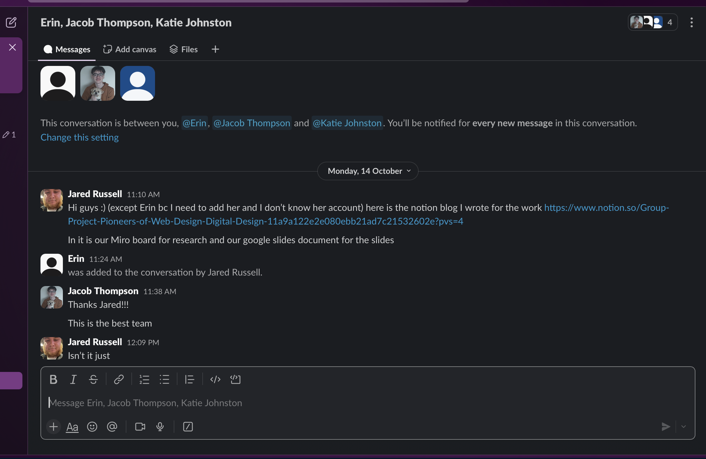

The Pioneers of Web Design
A five-minute group talk, dressed as a classic Mac
Summary Of Project
Together with Erin Megrath, Jacob Thompson and Katie Johnson, I researched the people who shaped web design, and we turned it into a five-minute talk for our class. Each of us researched and designed our own part of the deck. Alongside my own section, I kept the group organised and proposed the classic macOS look, which we agreed on together, so the design itself told part of the history.
Contents
Project Specifications
-
The project ran for 5 weeks.
-
A group project, team of four.
-
Figma, Google Slides, Miro, Slack.
-
A 5-minute class presentation.
The Brief
In groups, we had to research a chosen topic and present it to the class. Ours was the Pioneers of Web Design.
The research had to become a clear, engaging slide deck that felt cohesive from start to finish, and we had a strict limit of five minutes to present it.
The Problem
The history of web design is usually told through timelines or heavy blocks of text, which makes it harder for design students to engage with the pioneers who shaped modern interfaces.
That matters, because understanding how design evolved from early operating systems lets designers today make informed, intentional decisions, rather than just following trends.
Constraints
- A brand-new group: this was a first-year, first-semester project, so we didn’t really know each other yet. That was a challenge at first, but contributing, talking and having a laugh or two sorted it out quickly.
- Four people, one deck: everyone made their own slides, but the work still had to look and feel consistent.
- Five minutes: our content had to fit the time limit while staying engaging and legible for the class.
- Design with a purpose: the visuals had to support the theme, not distract from it.
The Process
The team
This was a real team effort. Every one of us researched our own part of the history and designed our own slides, and the deck only came together because all four of us pulled our weight.
- Erin Megrath: research and slides.
- Jacob Thompson: research and slides.
- Katie Johnson: research and slides.
- Jared Russell (me): research and slides on design in apps, plus organising the group and proposing the visual direction.
Keeping us organised
I offered to take on the coordination role. I set up a Miro board for shared research, a Google Slides document for us all to work in, and a Slack group chat to talk, share tasks and keep everything clear and consistent. It meant we could each work on our own parts while staying aligned.

My research
My section covered design in apps from 2010 to the present: the shift towards mobile-first design, flat UI and platform-specific conventions. I wrote my research out in Miro, then adapted it into the presentation, putting clarity ahead of extensive detail.
Refining the talk
As the presentation developed, I kept an eye out for clutter and helped refine the layout, slide order and timing. When we were running over the time limit, we cut it back together, focusing on quality over quantity.
Visual Direction
I suggested a classic macOS-inspired design, referencing early operating systems to reinforce the historical side of the project. We talked it through and agreed on it as a group, and everyone then built their slides in that style.
- The interface: each slide borrows the look of a classic Mac desktop, so the presentation feels like a piece of the history it talks about.
- The typeface: we chose EB Garamond together, for its link to early Apple marketing and because it reads well on a projector.
The Outcome
The final presentation combined historical research with a cohesive design that reinforced the story. Feedback singled out the classic macOS interface as a strong, legible choice that helped keep the class engaged. We presented calmly, clearly and confidently, and the talk was well received.
Reflection
I was really proud of this project once it was done, and of the team behind it. It showed me I could help lead a group collaboratively, balance my design ideas with everyone else’s, and communicate information clearly.
It taught me the importance of hierarchy, pacing and restraint, both in presenting and in design. I learnt to refine content early, pace my delivery and focus on design that supports clarity and the story being told.
Read my notes on Notion (opens in a new tab)